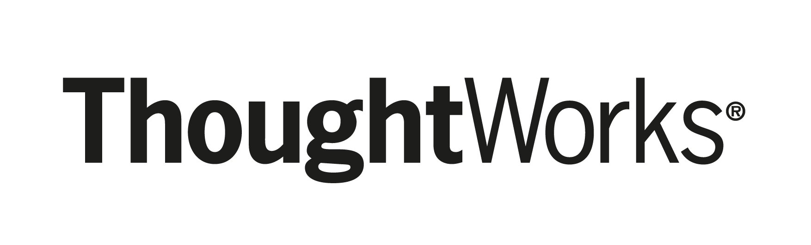
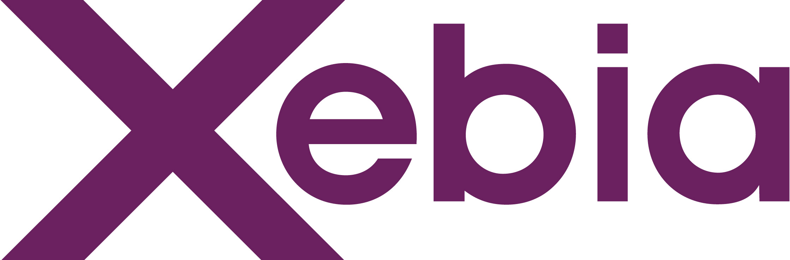

class: center, middle <img src="assets/images/singapore-2015-banner.png" width="100%" /> --- name: sponsors class: center, middle ## <strong><span style="font-family: arial">Host Sponsor</span><strong>  ## <strong><span style="font-family: arial">Gold Sponsors</span><strong> <img class="sponsor-gold" src="../logos/pivotal.png" /> <img class="sponsor-gold" src="../logos/puppetlabs.png" /> <img class="sponsor-gold" src="../logos/titansoft.png" /> <img class="sponsor-gold" src="../logos/datarobot.png" /> <br> <img class="sponsor-gold" src="../logos/ca.png" /> <img class="sponsor-gold" src="../logos/forest_tech.png" /> <img class="sponsor-gold" src="../logos/actifio.jpg" /> <img class="sponsor-gold" src="../logos/dynatrace.gif" /> ### <strong><span style="font-family: arial">Silver Sponsors</span><strong> <img class="sponsor-silver" src="../logos/redmart.png" />  <img class="sponsor-silver" src="../logos/redhat.png" /> <img class="sponsor-silver" src="../logos/paypal.png" /> <img class="sponsor-silver" src="../logos/zalora.png" /> --- class: center, middle # Get Ready for DevOpsDays! [DevOps Meetup](http://www.meetup.com/de/devops-singapore/events/223885843/), July 29 2015 Christian Trabold [@ctrabold](https://twitter.com/ctrabold) --- class: center, middle  # What is DevOpsDays About? --- class: center, middle # History # Core Values # Style --- # History 2009 - 2015 --- # Started in Europe… now global  First DevOpsDays in Belgium, Europe October 2009<br>https://blog.newrelic.com/2014/05/16/devops-name/ --- # Core Values - Open culture - We all have the same problems… let's talk about it! --- # Style ## Talks in the morning ## Open Space in the afternoon --- # Full Program # http://www.devopsdays.org/events/2015-singapore/program/ --- # What is open space? ## Timeboxed ## Marketplace of ideas ## Break-out sessions ## Bumblebees, butterflies and the law of two feet --- # Incentives - why should I go? ## You can make it **your** conference! ## We provide a safe environment for discussions ## Prepare to be surprised! It's fun! --- class: center, middle # Bottom line: **[You make awesome!]()** --- class: center, middle # Thanks!